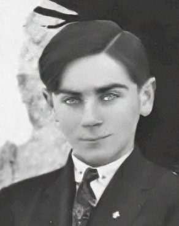
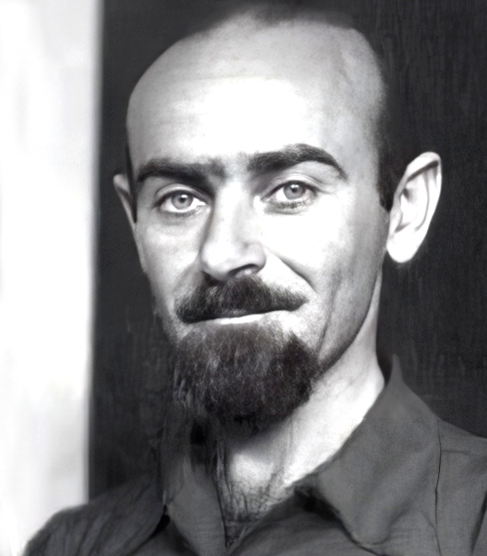
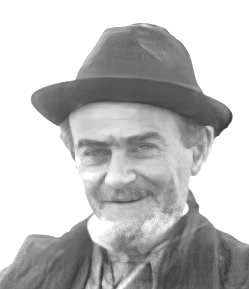
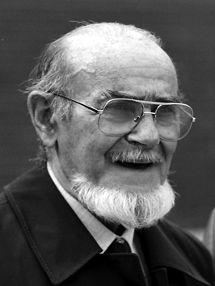
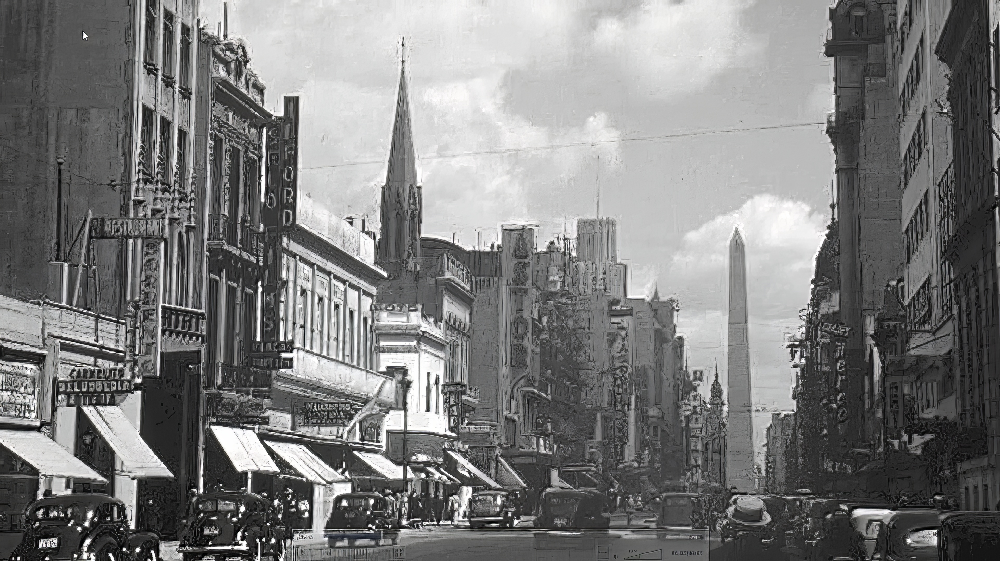
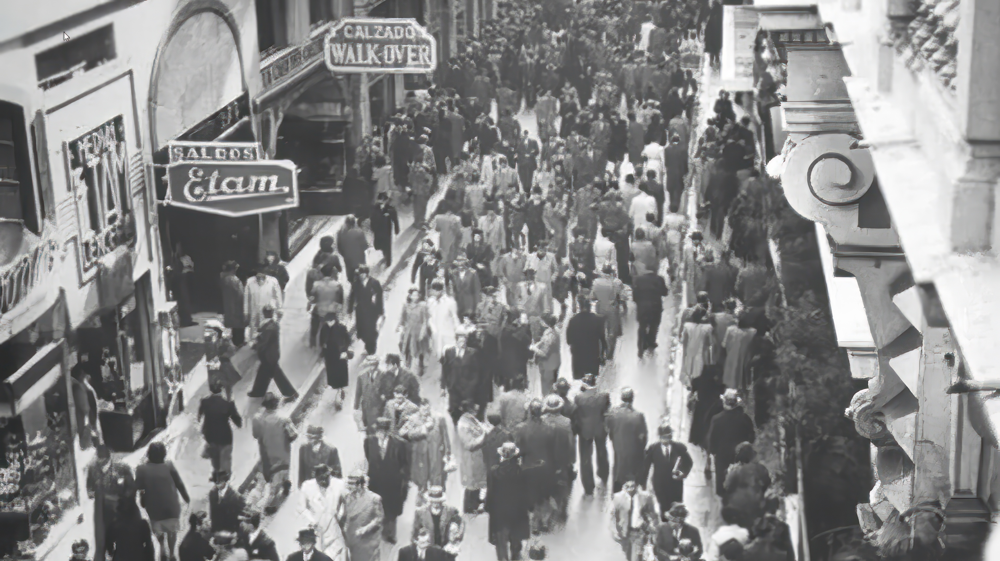
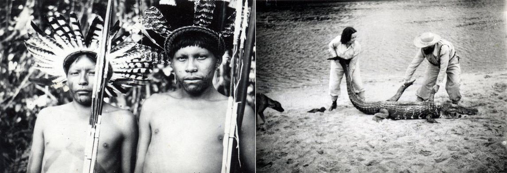
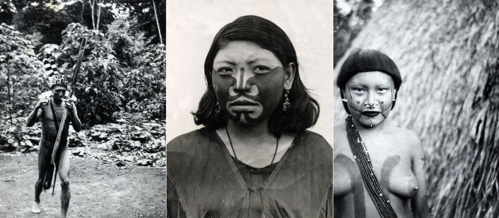

Življenje na poti · 1912–1988
Tibor
Sekelj
Človek, ki ga je gnala radovednost – raziskovalec, pisatelj, popotnik in esperantist.
Opomba predavatelja
Od obletnice do današnjega izbora
Prvo predstavitev o Tiboru Sekelju sem pripravil pred 14 leti ob 100. obletnici njegovega rojstva. Takratna predstavitev je sicer služila kot osnova, vendar sem jo v veliki meri spremenil.
Toliko različnih plati enega življenja
Sekeljevo življenje je bilo tako bogato, da bi lahko pripravili precej več samostojnih predstavitev – med drugim o njem kot:
geografu, novinarju, filmarju, alpinistu, etnologu, pustolovcu, političnem aktivistu, poliglotu, esperantistu, izobraževalcu, umetniku, pisatelju in še bi se našlo.
Danes bom izpostavil le nekaj teh plati – po lastni izbiri.
Kdo je bil?
Več kot popotnik
Tibor Sekelj (1912–1988) je bil novinar, raziskovalec, etnograf, pisatelj, muzealec in eden vidnejših esperantistov svojega časa.
Njegovo življenje je bilo zaznamovano s stalnimi selitvami in raziskovanjem že od zgodnjega otroštva, kar ga je oblikovalo v svetovljana in poliglota.




Mladost in korenine
Oče živinozdravnik in prvih deset let v Ceneju
Oče Tiborja Sekelja je bil živinozdravnik, družina se je često selila.
Selitev v Cenei
Le nekaj mesecev po Tiborjevem rojstvu se je družina naselila v mestu Cenei v današnji Romuniji, kjer je Tibor prebival prvih deset let svojega življenja.
Jezikovno okolje
Domač jezik je bil madžarščina, na cesti so govorili tudi nemško narečje.
Šolanje in odraščanje
Od Kikinde in Nikšića do Zagreba
Kikinda (1922)
Družina se je preselila leta 1922 v Kikindo (Кикинда), Srbija, Jugoslavija, kjer se je Tibor naučil srbohrvaščine; tedaj se je učil francoščine in celo poučeval svoje vrstnike tako, da je bil nekaj lekcij pred njimi. Ta jezik je izpopolnil s francosko učiteljico; odtlej se je približno vsako četrto leto naučil novega jezika. V Kikindi je končal osnovno šolo.
Nikšić (1926) in Zagreb (1929–1937)
Družina se je leta 1926 preselila v Nikšić (Никшић), Črna gora, kjer je končal gimnazijo. Že v srednji šoli je vzljubil plezanje po gorah in peš je prehodil vso Črno goro. V letu 1929 se je vpisal na univerzo, da bi študiral pravo v Zagrebu (Hrvaška), kjer je leta 1933 diplomiral kot eden izmed treh najmlajših študentov. V teh letih se je izučil tudi slikanja, kiparjenja in novinarskega dela, s katerim se je začel preživljati. Med drugim se je naučil mednarodnega jezika esperanta. V letu 1937 je začel delovati v Zagrebu kot filmski dramaturg.
Zemljevid in letnice
Kraji bivanja
Pregled krajev, kjer je Tibor Sekelj živel, se šolal ali deloval med letoma 1912 in 1988.
Rojstvo in zgodnja leta
Spišská Sobota (1912) in Cenei (1912–1922) ter šolanje v Kikindi (1922–1926), Nikšiću (1926–1929) in Zagrebu (1929–1939).
Poznejša obdobja
Po vrnitvi iz Južne Amerike bivanje v Beogradu (1954–1972) in Subotici (1972–1988).
Začetek poti
Leta 1939: odhod v Argentino
V Buenos Aires je odšel kot novinar. Tam je ostal približno petnajst let – in njegovo življenje se je spremenilo v niz odprav, raziskovanj in knjig.
1939
Buenos Aires
Novinarsko delo ter študij etnologije in arheologije.
~15
Let v Južni Ameriki
Potovanja po Argentini, Braziliji, Boliviji in drugih državah celine.




Gore in preizkušnje
Zgodovinska odprava na Aconcagvo (1944)
Vzpon na najvišji vrh Južne Amerike (6.961 m) in boj s silovitim gorskim viharjem.
Vzpon brez predhodnih izkušenj
Leta 1944 se je Sekelj pridružil odpravi pod vodstvom švicarskega alpinista Georga Linka. Kljub temu da prej ni imel večjih alpinističnih izkušenj, je 13. februarja 1944 skupaj z Avstrijcem Zechnerjem in Italijanom Bertonejem stopil na vrh najvišje gore Južne Amerike.
Tragedija in reševalna akcija
Odpravo je zajel silovit snežni vihar, v katerem so umrli štirje od šestih udeležencev. Enajst mesecev pozneje je Sekelj na pobudo argentinske vojske sodeloval še v drugi odpravi, na kateri so našli trupla preminulih plezalcev.

Slika ni najdena
Preveri, ali obstaja datoteka Sekelj/Sekelj_z_alpinistom_Zechnerjem.jpg glede na to HTML-datoteko.
Sekelj z alpinistom Zechnerjem v ozadju Aconkagva
Literarni prvenec
Knjiga Vihar nad Aconcaguo
Knjiga Vihar nad Aconcaguo (v španščini Tempestad sobre el Aconcagua) je Sekeljev knjižni prvenec, v katerem je opisal dogajanje na andski odpravi.
Od gorske drame do knjige
Neposredna izkušnja nevarnosti, mraza in izgube v visokogorju je prerasla v pretresljivo pripoved o vztrajnosti in soočanju z naravnimi silami.
Slovenski izdaja in pomen
V slovenščini je izšla pri Mladinski knjigi leta 1958 in velja za klasiko gorniške ter potopisne literature.
Odprave v Južni in Srednji Ameriki
Kje vse je bil v letih 1939–1954
Po odhodu v Južno Ameriko je prepotoval vrsto pokrajin in se srečeval z različnimi ljudstvi.
1939–1945 · Argentina in Aconcagua
Bivanje v Argentini ter vzpon na Aconcagvo in andske odprave.
1946–1947 · Mato Grosso
Raziskovanje brazilskega območja Mato Grosso.
1948–1949 · Bolivija in pleme Živari
Potovanja po Boliviji in srečanje s plemenom Živari.
1949–1951 in 1951–1954 · Venezuela in Srednja Amerika
Leta 1949–1951 v Venezueli, nato pa v letih 1951–1954 še po Srednji Ameriki.
Južna Amerika · 1939–1954
Tibor Sekelj med plemeni


Vrnitev in odmev
Leta 1954: vrnitev v Jugoslavijo in Beograd
Leta 1954 se je ob vrnitvi v Jugoslavijo naselil v Beogradu, kjer sta ga toplo sprejela tako vlada kakor tudi javnost zaradi njegovih zanimivih doživetij in človekoljubnega sporočila.
Časopisni članki
Številni njegovi članki so bili objavljeni v časopisih.
Knjige v več jezikih
Več njegovih knjig je bilo prevedenih v srbski, slovenski, madžarski, albanski jezik in mednarodni jezik esperanto.
1956–1957 · Azija
Indija, Kitajska in Nepal
Leta 1956 je z avtomobilom krenil na konferenco UNESCO v New Delhiju kot opazovalec Svetovne esperantske zveze (UEA); po okvari avtomobila v Teheranu je pot nadaljeval z avtobusom in vlakom.
Srečanja in prevajanje
Pogovarjal se je z Nehrujem in Indiro Gandhi, se spoprijateljil z dr. Radhakrishno ter v jugoslovanski ambasadi pomagal kot prevajalec Ljubomiru Vukotiću (predsedniku Svetovne zveze gluhih) ob ustanavljanju azijske pisarne z indijskimi in kitajskimi predstavniki.
Kitajska in Nepal (1957)
Januarja 1957 je spremljal Vukotića na Kitajsko (tedaj nedostopno za turiste), nato pa šest mesecev ostal v Nepalu. Kralj Mahendra se mu je zahvalil za ustanovitev prve ljudske univerze in začetek poučevanja esperanta.
1957–1959 · Knjiga in Indija
Nepalo malfermas la pordon in pot po Indiji
Knjigo Nepalo malfermas la pordon (Nepal odpira vrata, 1959) je izvirno napisal v esperantu med postankom v Madrasu v južni Indiji, kjer je združil pisanje in proučevanje jogijske filozofije.
Prevodi in odmev
Knjiga je bila prevedena v številne jezike, med drugim v angleščino, srbščino in slovenščino.
Od templjev do votline z jogiji
Po pisanju knjige je znova obiskal Indijo – peš in delno z avtobusom od kraja do kraja in od templja do templja – ter tri mesece preživel z drugimi jogiji v votlini.
Azija · 1962–1963
Potovanje po Indiji in srečanje z Vinobo Bhavejem
Med svojim bivanjem v Indiji se je Tibor Sekelj podrobno seznanil z indijsko kulturo, filozofijo in družbenimi gibanji tistega časa.
Posebno pomembno je bilo njegovo srečanje z Vinobo Bhavejem, duhovnim naslednikom Gandhija in voditeljem gibanja Bhoodan (darovanje zemlje za revne kmete).
V enem samem mesecu ga je Tibor naučil esperanta, kar je lepo pokazalo, kako hitro se je mogoče sporazumeti preko kulturnih in jezikovnih meja.
1961–1963 · Afrika
Maroko in »Karavano de Amikeco«
Leta 1961 je na povabilo maroških esperantistov obiskal Maroko in se pridružil tuareški karavani v Sahari, vmes pa bil v Beogradu.
Karavana prijateljstva (marec 1962 – eno leto)
Osem ljudi iz štirih držav v dveh terenskih vozilih je prepotovalo Egipt, Sudan, Etiopijo, Somalijo, Kenijo in Tanzanijo (druga načrtovana karavana ni bila uresničena).
Kilimandžaro in Ĝambo rafiki
Cilj poti so bili neposredni človeški stiki; splezal je na Kilimandžaro ter o poti v esperantu napisal Ĝambo rafiki, ki je najprej izšla v slovenskem prevodu.
1965–1966 · Sibirija, Mongolija in Evropa
Od Tokia in Mongolije do Evrope
Leta 1965 je na svetovni esperantski kongres UK v Tokiu potoval prek Moskve, Irkutska in Habarovska, z vlakom do Nahodke in z ladjo do Jokohame.
Trije meseci v Mongoliji
Po mesecu na Japonskem se je na povratku čez Sibirijo za tri mesece nenačrtovano ustavil v Mongoliji, kar je bilo v tistem času ob vseh vizumih in dovoljenjih posebej zahtevno.
Po Evropi
V naslednjih letih je obiskal skoraj vse evropske države razen Albanije in Islandije, s posebnim odmevom v Španiji in skandinavskih državah.
1970 · Oceanija
Avstralija, Nova Zelandija in Nova Gvineja
Leta 1970 je odletel v Avstralijo, Novo Zelandijo in Novo Gvinejo, kjer je ostal šest mesecev, se povzpel na goro Kosciuszko ter se v Novi Gvineji srečal z ljudstvi z malo stiki s zunanjim svetom.
Talenti na poti in več kot 20 jezikov
Znal se je rešiti iz mnogih nevarnih položajev, se vživeti v različne navade in običaje (tudi prehranjevalne) ter se sporazumeti v najrazličnejših jezikih – usvojil si jih je več kot dvajset.
Oceanija · 1970
Papua Nova Gvineja
1972–1980 · Mednarodna srečanja in odprave
Od Chicaga in Leningrada do Ekvadorja
V sedemdesetih letih je potovanja pogosto povezoval z mednarodnimi kongresi etnologov in kulturnimi dogodki.
1972 · Severna Amerika
Ob mednarodnem kongresu etnologov v Chicagu je obiskal vzhodne predele Kanade in ZDA.
1977 in 1978 · Centralna Azija, Afrika in Ekvador
Leta 1977 je ob dogodku v Leningradu potoval v Uzbekistan in centralno Azijo ter bil na festivalu črnskih in afriških kultur v Lagosu v Nigeriji; leta 1978 pa je znova obiskal Južno Ameriko ter bil prvikrat v Ekvadorju in na Galapaških otokih.
Muzejske zbirke
Popotnik, ki je zbiral tudi predmete
Na potovanju po Avstraliji in Papui Novi Gvineji je zbral obsežno zbirko predmetov, ki se danes hranijo v muzejih v Senti, Subotici in Zagrebu.
Zakaj je to pomembno?
Njegova potovanja niso pustila le knjig in fotografij. Del materialne kulture, s katero se je srečal, je postal del muzejskih zbirk in je danes dostopen za proučevanje.
Etnografski muzej v Zagrebu je leta 2022 pripravil razstavo »Tibor Sekelj u Okeaniji«.
Muzejske zbirke
Predmeti iz zbirk
Esperanto
Jezik kot most med ljudmi
Esperanto se je naučil leta 1930 v Zagrebu. V njem je videl praktično sredstvo za sporazumevanje med ljudmi različnih jezikov in kultur.
Avtor v esperantu
Pomemben del njegovega literarnega opusa je nastal neposredno v esperantu.
Mednarodno gibanje
Bil je dejaven v svetovnem esperantskem gibanju, predaval, pisal in spodbujal mednarodna srečanja.
Jezikovna radovednost
Od lokalnih govorov do mednarodnega jezika
Sekelj ni videl esperanta kot zamenjave za materne in lokalne jezike, temveč kot skupni vmesni člen pri stiku različnih svetov.
Praktična raba
Omogočal je hitrejši stik s sogovorniki po svetu brez vedno vmesnega prevajanja prek velikih jezikov.
Literarni izraz
V esperantu je pisal potopise, prozo in prispevke za mednarodne revije.
Spomin in skupnost
Njegovo delo še danes povezuje esperantska društva, raziskovalce in bralce.
Pisatelj
Potovanja, ki so postala knjige

Tempestad sobre el Aconcagua
Vihar nad Aconcaguo (Buenos Aires)

Nepalo malfermas la Pordon
Nepal odpira vrata (v esperantu)

Mondo de travivajoj
Svet živih bitij (Edistudio)

Kolektanto de ĉielarkoj
Zbiratelj mavric – zgodbe in pesmi

Kumewawa, syn džungle
Zgodba iz amazonskega pragozda
Njegova dela so izhajala v več jezikih – med drugim v španščini, esperantu in različnih jezikih jugoslovanskega prostora.
Mladinski pustolovski roman · 1979
Kumevava, sin pragozda
Izvirno v esperantu (Kumeŭaŭa, la filo de la ĝangalo, 1979): po brodolomu na reki Araguaia popotniki spoznajo iznajdljivega brazilskega dečka Kumevavo, ki pragozd pozna kot svoj dom.
Glavno sporočilo knjige
Znanje ni pogojeno s šolsko izobrazbo, človek mora naravo spoštovati in razumeti, kulture pa se bogatenje učijo druga od druge ob prijateljstvu onkraj jezikovnih in kulturnih meja.
Mednarodni uspeh in bistvena misel
Prevedena v številne jezike (na Japonskem 1987 uvrščena med najboljša mladinska dela). Kumevava kot otrok pragozda s svojim znanjem narave prekaša odrasle iz »civilizirane« družbe – vsak človek ima vrednost ne glede na kulturo.
Kumevava · 1 / 2
Zgodba in srečanje v pragozdu
Zgodba se odvija v amazonskem pragozdu v Braziliji. Popotniška skupina med plovbo po reki Araguaia doživi brodolom oziroma nesrečo s čolnom. Ob tem spoznajo mladega Indijanca Kumevavo, ki živi v pragozdu in ga pozna kot svoj dom.
Kumevava je sprva za prišleke nenavaden deček, vendar hitro pokaže, da je izjemno spreten, iznajdljiv in bister. Medtem ko se popotniki v neznanem okolju počutijo negotove, je zanj pragozd povsem domač svet. Pozna njegove poti, rastline, živali in nevarnosti.
Deček popotnikom postopoma razkriva skrivnosti pragozda. Pokaže jim, kako se je mogoče znajti v naravi, kako prepoznati nevarnosti, kako uporabljati naravne vire in kako preživeti v okolju, kjer človek ne more računati na udobje sodobne civilizacije.
Kumevava · 2 / 2
Dogodivščine in glavno sporočilo knjige
Skozi dogodivščine spoznavajo, da pragozd ni samo lep in bogat svet, temveč tudi nepredvidljivo in nevarno okolje. Kumevava se izkaže za odličnega poznavalca narave, ki s svojim znanjem pogosto pomaga tudi odraslim.
Ob tem se med njim in popotniki razvije prijateljski odnos. Njihovo srečanje postane tudi priložnost za spoznavanje drugačnega načina življenja, kulture in vrednot domorodnih prebivalcev.
Glavno sporočilo knjige
Knjiga presega okvir običajnega pustolovskega romana. Sekelj z njo opozarja na nekaj pomembnih spoznanj:
- Znanje ni odvisno od šolske izobrazbe. Kumevava ima znanje, ki ga odrasli obiskovalci pragozda nimajo.
- Človek mora spoštovati naravo. Za preživetje je potrebno naravo razumeti, ne pa se boriti proti njej.
- Različne kulture se lahko veliko naučijo druga od druge. Ni nujno, da je način življenja civiliziranega človeka tudi edini ali najboljši.
- Prijateljstvo presega kulturne in jezikovne razlike.
Muzejski strokovnjak
Od raziskovalca do direktorja muzeja
Leta 1972 je postal direktor Mestnega muzeja v Subotici. Zanimalo ga je, kako naj muzeji predstavljajo različne kulture in kako lahko prispevajo k boljšemu razumevanju med ljudmi.
1976
Magistrsko delo o prihodnosti etnografskih muzejev
Njegovo delo je nosilo naslov Etnografski muzeji za budućnost – muzeji naj ne bodo zgolj skladišča predmetov, temveč prostor razumevanja kultur.
Njegov pogled na svet
»V resnici so razlike med nami le površinske.«Misli Tibora Sekelja, povzeto po njegovem zapisu na portalu Putnici
Potovanja zanj niso bila samo premikanje iz kraja v kraj. Želel je razumeti ljudi – njihove navade, razmišljanje in način življenja.
Zaključek
Zakaj se ga še spominjamo?
Ker je združil pustolovščino, raziskovanje, pisanje, zanimanje za druge kulture in prepričanje, da se ljudje lahko sporazumevamo onkraj jezikovnih meja.
Raziskovalec
Iskal je neznano in se odpravljal daleč od ustaljenih poti.
Pisatelj
Doživetja je spremenil v knjige, ki so dosegle bralce v številnih jezikih.
Esperantist
Verjel je v mednarodno sporazumevanje in prijateljstvo.
Muzejski strokovnjak
Skrbel je, da predmeti in zgodbe različnih kultur ostanejo ohranjeni.
Tibor Sekelj · 14. februar 1912 – 20. september 1988 (v virih se datum smrti ponekod razlikuje).
Video za predavanje
Naj spregovori tudi slika
Kratki odlomki za predavanje. Preveri povezave.